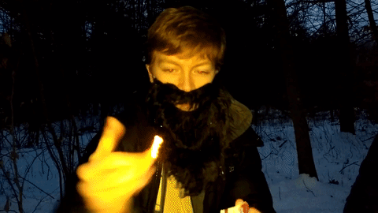
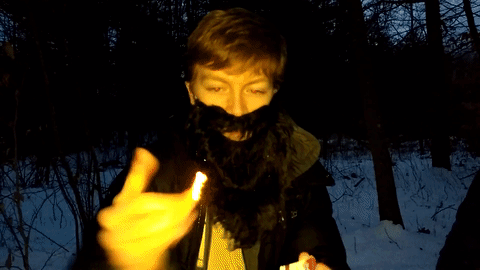

World Without Warnock
In my senior year of high school—the week of mid-terms, to be exact—my friend Jack Warnock went away on a week-long community service trip. Jack and I were in a group chat with our mutual friend Tom created about a year prior called “Big Trouble in Little Caesars” (for reasons not worth explaining). In Jack's absence, Tom and I felt it necessary to send him a ridiculously convoluted artistic tribute. Instead of studying for mid-terms, we spent the week exploring the capabilities of instant messaging as a storytelling device.
So without further ado, and presented in approximately the same format Jack received them, here are the five installments of World Without Warnock:

Tom and John arrived at school on Tuesday morning and went about their regular routine. Initially, nothing seemed amiss, but they soon noticed that something was... missing.
It started when they were rapping.

"Yo my name is John, it's a really great day, now I'ma pass it to the Screenwriting TA" ♬

"Yo my name is Tom, and I don't want to trouble you, but I'ma pass it down to my boy JW" ♬
"..."
Then they realized what was wrong. They were without Warnock. They were one Little Caesar too few.
What are they going to do? Will they survive a week in a world without Warnock?


The next day, Tom and John decided that they needed to fill the large, gaping Jack-shaped hole in their lives.
New Jack joined Tom and John in all the activities that they had partaken in with old Jack. They had a grand old time. It was as if nothing had changed.


It was a sad time when New Jack had to leave them that evening. But then he revealed his reasons for leaving:

"Well boys," he said, putting on a strange hat. "I've got to go to my Big Lebowski Hating Club."
Tom, John, and Old Jack loved The Big Lebowski. This new Jack couldn't possibly be an apt replacement for Warnock. And so they were left once again with a hole in the trio and in their hearts.

"Johnny," said Tom with exasperation, "I just don't know what to do without Jack."

"Perhaps we just need to take a walk," John said, timidly.

And so, Tom and John meandered aimlessly into the woods, knowing not what there travels would bring them.
Then...
 



"Elder John, it has been many suns since the light of Jack left our lives."

"Yes, Elder Tom, but we have found new kinship in the glory of nature."

"Indeed, Elder John. Squash Jack has given us plentiful company."


"Let us feast and be merry."

As a decoration for the Evening of Self-Indulgence, Tom designed the poster below.